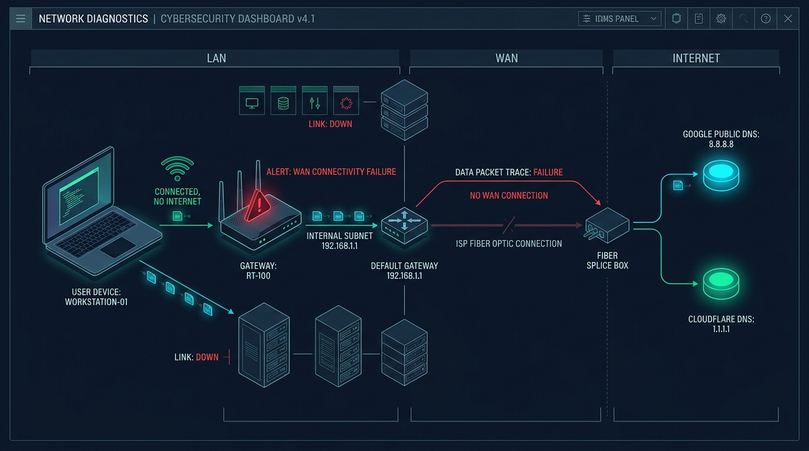

How to Fix "Wi-Fi Connected, But No Internet Access" (2026 Step-by-Step Guide)
A comprehensive IT engineer troubleshooting manual for resolving Windows 11, Windows 10, and office router network drops without reformatting your system.

Few technical errors are more exasperating than looking at your Windows system tray, seeing a solid Wi-Fi connection with full signal bars, only to find the dreaded yellow exclamation mark or globe icon accompanied by the message: "Connected, no internet".
Your laptop connects to the router with ease, but web pages refuse to load, Teams and Slack disconnect, and DNS queries fail with ERR_NAME_NOT_RESOLVED. At Eebii, our managed network engineers troubleshoot this issue daily across hundreds of client workstations. Here is the exact diagnostic workflow we use to isolate the root cause and restore full connectivity in under five minutes.
The Fundamental Problem: LAN vs. WAN
To resolve the error, you must first understand what Windows is telling you. The "Connected" indicator verifies that your device's wireless card has successfully authenticated and established a local link with your Wi-Fi access point (the Local Area Network or LAN).
However, the "No Internet" status indicates that your operating system sent probe packets to Microsoft’s Network Connectivity Status Indicator (NCSI) servers (such as www.msftncsi.com/ncsi.txt), and received no reply. The breakdown almost always stems from one of four choke points:
- A Corrupted TCP/IP Network Stack or Winsock Catalog: Windows socket handlers are failing to bind incoming network packets.
- Stale or Poisoned Local DNS Cache: Your computer is querying an outdated or unresponsive ISP Domain Name System resolver.
- DHCP Lease or IP Collision: Two devices on the same office or home network were accidentally assigned the same local IP address.
- Upstream ISP Gateway Drop: The router itself lost connection to the Internet Service Provider's optical line terminal (OLT).
Phase 1: The 60-Second Command Line Diagnostic
Before randomly rebooting hardware, open a terminal to pinpoint where the packet chain is severing. Press Win + R, type cmd, and press Ctrl + Shift + Enter to launch Command Prompt as Administrator. Execute these three ping tests in order:
| Command Executed | What It Tests | Interpretation of Result |
|---|---|---|
ping 127.0.0.1 |
Internal Loopback Adapter | If this fails, your physical wireless card driver or Windows TCP/IP kernel stack is damaged. |
ping 192.168.1.1 (or your gateway) |
Local Router / Gateway Link | If this fails, the problem is between your laptop and your Wi-Fi router (bad password, IP conflict, or MAC filter). |
ping 8.8.8.8 |
Direct WAN / Internet Access | If this succeeds but websites still don't open, your internet is working, but your DNS resolver is dead! |
Phase 2: The Core Network Stack Flush (The #1 Fix)
In over 70% of business workstation cases, the root cause is a corrupted Winsock catalog or stale dynamic IP lease. Execute the following sequential stack reset in your elevated Command Prompt:
ipconfig /flushdnsipconfig /releaseipconfig /renewnetsh winsock resetnetsh int ip reset
What this does:
/flushdnsclears the local memory cache of translated domain names, removing corrupted IP routing tables./releaseand/renewforcibly drops your existing local IP address and requests a clean, uncontested IP address from your router's DHCP pool.netsh winsock resetrestores the Windows Sockets API catalog to clean defaults, immediately clearing glitches caused by VPN software, proxy crashes, or third-party firewall hooks.
Once complete, restart your computer to apply the new socket catalog.
Phase 3: Switch From Unstable ISP DNS to Enterprise Public DNS
Most residential and small business routers inherit the default DNS servers assigned by local telecom providers (Airtel, Jio, BSNL, ACT, Spectrum). When these regional ISP DNS nodes experience congestion or downtime, your device will display "Connected, No Internet" even though the underlying fiber line is perfectly healthy.
Recommended Enterprise Public DNS Addresses
Google Public DNS: Primary: 8.8.8.8 | Alternate: 8.8.4.4
Cloudflare High-Speed Privacy DNS: Primary: 1.1.1.1 | Alternate: 1.0.0.1
How to Configure Static DNS in Windows 11 & 10:
- Press
Win + R, typencpa.cpl, and hit Enter to open Network Connections. - Right-click your active Wi-Fi adapter and select Properties.
- Scroll down, click on Internet Protocol Version 4 (TCP/IPv4), and click Properties.
- Select the radio button: "Use the following DNS server addresses".
- Enter
8.8.8.8as Preferred DNS server, and1.1.1.1as Alternate DNS server. - Check the box "Validate settings upon exit" and click OK.
Phase 4: Disable 802.11 Power Saving (Fixes Random Disconnects)
If your laptop connects to Wi-Fi initially upon boot, but drops to "No Internet" after waking up from sleep or 15 minutes of idle time, Windows Power Management is turning off your wireless chip to conserve battery.
- Right-click the Start Menu and select Device Manager.
- Expand Network Adapters, right-click your Wi-Fi card (Intel Wi-Fi 6 AX200, Realtek, or Qualcomm), and choose Properties.
- Navigate to the Power Management tab.
- Uncheck: "Allow the computer to turn off this device to save power".
- Click OK and test stability.
Phase 5: The Correct Router Power-Cycle (The 30-Second Rule)
If multiple devices in your office (phones, tablets, workstations) simultaneously show "Connected, No Internet", the failure is at the gateway router, not your individual computer.
Do not simply press the power button off and on immediately. Modern fiber routers contain volatile capacitors that retain electrical charge for several seconds, keeping memory registers active:
- Unplug the AC power cord from the back of the router/modem.
- Wait a full 30 seconds to allow internal capacitors to fully discharge and clear the router's NAT routing tables and ARP cache.
- Plug the power cord back in. Allow 2 to 3 minutes for the PON/WAN fiber sync lights to turn solid green before testing internet access.
Frequently Asked Questions (FAQ)
Q: Why does my phone work on Wi-Fi, but my laptop says 'No Internet'?
This confirms your ISP fiber is active. The failure is localized to your laptop—usually caused by a corrupted Windows DNS cache, aggressive third-party antivirus firewall blocking port 53, or an outdated Wi-Fi adapter driver. Running netsh winsock reset and setting static DNS (8.8.8.8) will resolve this immediately.
Q: Can a VPN cause 'Connected, No Internet'?
Yes. When a VPN client (like NordVPN, Cisco AnyConnect, or OpenVPN) crashes or disconnects abruptly, its virtual TAP network adapter often fails to restore default routing tables. Open your VPN software, toggle the Kill Switch off, or disable the VPN TAP adapter in ncpa.cpl.
Need Enterprise Network Support?
Eebii provides managed IT infrastructure, commercial firewall deployments, and 24/7 technical support for businesses across India.